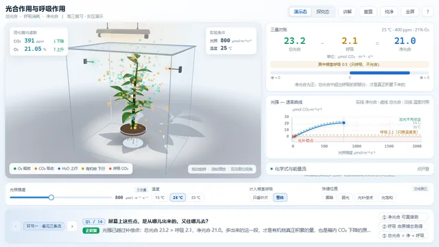
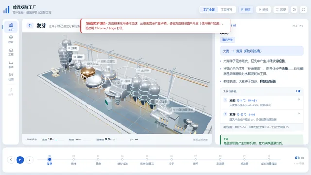
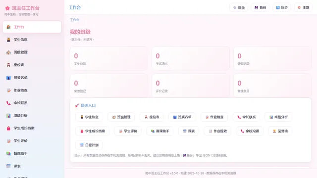
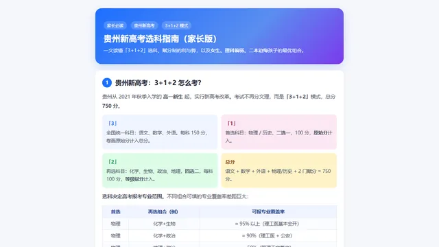
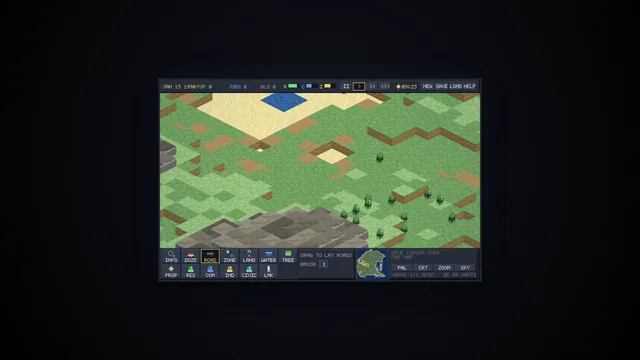
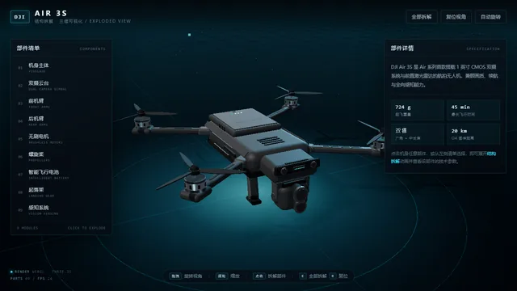
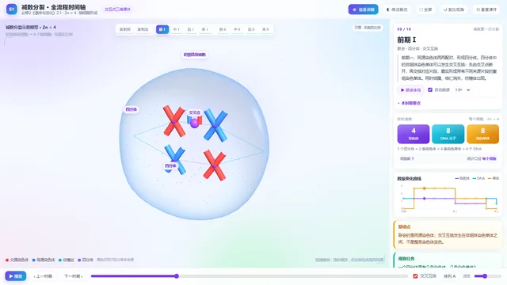

最新上线
最近加进来的三个
全部应用
按学科或类型筛选
001
生物
002
生物
003
004
005
006
007
生物
008
生物
009
生物
010

光合作用与呼吸作用
必修1 · 第5章 光合作用
Photosynthesis & Respiration
一株植物上的交互式教学演示。把总光合、呼吸、净光合三条流量放到同一株植物、同一时刻、同一个密闭同化箱里，用可测量的方式讲清楚「净光合是测出来的，总光合是推出来的」。

啤酒发酵工厂
选必3 · 第1章 发酵工程
Brewery Fermentation (3D)
以等距 3D 场景讲清麦芽糖化、煮沸、发酵、过滤、灌装的完整工艺链，每一步可暂停、可剖切、可看实时数据。

班主任工作台
班级管理 · 23 个模块
Class Teacher Workbench
23 个模块覆盖学生、成绩、座位、课表、班委、班费、公告、家长联系、谈话、违纪、值日与安全。数据全部存在浏览器本地，不上传任何服务器。

贵州新高考选科指南
选科参考 · 3+1+2
Subject Selection Guide
面向贵州新高考 3+1+2 的选科指南：专业覆盖、学科组合优势、可报院校范围逐条说清楚，附可打印长图。

ISO-CITY 98
沙盒游戏 · 等距像素
Isometric City Builder
1998 年 DOS 风格等距像素城市建造沙盒，完整预渲染单文件，浏览器直接开玩，支持存档与回放。

DJI Air 3S 三维拆解
技术演示 · 程序化建模
DJI Air 3S Exploded View
用 Three.js 全程序化构建的 DJI Air 3S 无人机拆解视图，点击部件即可沿拆解方向分离并查看参数，支持自由旋转缩放与发光高亮。

S-01 减数分裂全流程
必修2 · 第2章 减数分裂
Meiosis 3D Timeline
减数分裂全过程时间轴：白色鲜艳主题，three.js 单文件离线，含语音讲解与动画同步，与人教版 2019 选修教材逐阶段对应。
安德生物工作室
跨章节 · 29 个模型 + 题库
Ander Studio Offline
安德生物工作室离线镜像：29 个交互教学模型 + 938 道题库快照，零依赖本地服务。
生物教学模型库
跨章节 · 3D / 2D 模型库
Biology Model Library
教学模型库：分子与细胞、遗传与进化各模块的交互式 3D/2D 模型，配套讲解与题库，全部本地下载、无需联网。
互动课件合集
初中化学 + 跨学科 · 59 个课件
Courseware Packs
两套可直接运行的互动课件合集：初中化学 6 个 + 小白教育 53 个，全部单文件或零依赖，断网可用、双击即开。
最近文章
做东西时的取舍，以及一些踩过的坑
最近更新
每次改动都记了时间戳，精确到秒
2026-10-29 22:41:50更新 S-01 减数分裂全流程
2026-10-29 20:58:10修订 这张图怎么看 —— 光合 / 呼吸曲线读图指南、「净光合是测出来的，总光合是推出来的」、为什么我把课件做成单文件 HTML
2026-10-29 20:46:10更新 S-01 减数分裂全流程 · 修订 这张图怎么看 —— 光合 / 呼吸曲线读图指南、「净光合是测出来的，总光合是推出来的」、为什么我把课件做成单文件 HTML
2026-10-29 08:58:58内容调整
2026-10-29 08:52:53内容调整
2026-10-29 08:47:42更新 S-01 减数分裂全流程
关于这个站
我是个 vibe coding 爱好者 —— 大部分代码是 AI 写的，我负责提需求、挑方向、调细节。做久了发现，最实用的形态不是在线平台，而是一个能双击打开的 HTML 文件：不用部署、不依赖网络、拷进 U 盘就能带走。
这里放的就是这些作品，以及做它们时的一些想法。都是业余时间折腾出来的，觉得有用就拿去用。
1大部分是单文件，断网可用，可拷进 U 盘带走
2数据存在浏览器本地（localStorage），不上传任何服务器
3没有账号系统，没有统计脚本，没有广告
4源码都在 GitHub 上，欢迎提意见或自己改